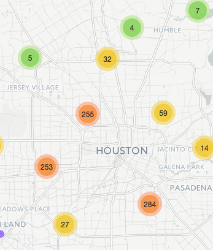
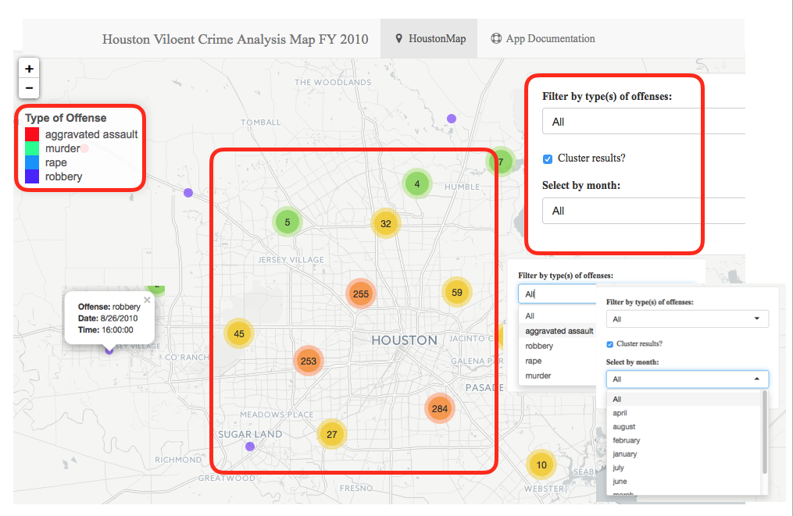

Crime Analyzer Shiny Web Application

Abiyu Giday
December 24, 2015
What is Crime Analyzer Shiny Web App?
- Crime Analyzer web application provides graphically detailed insight for crime analysis in a large metropolitan area.
- The application comes loaded with Huston Police crime dataset from January 2010 to August 2010, but datasets from other metropolitan areas can be loaded.
- The application loads violent crime by type, by month or by a combination of both.
- Each crime type is depicted with different color pallet.
- The crime location is geocoded and is displayed on a map in the exact spot where the crime took place.
Refrencehttp://www.houstontx.gov/police/cs/stats2.htm
Graphic User Interface of the application

Crime Web App Features:
- Clustering feature allows to combine and view crime from a bird’s eye view.
- When hovering over and clicking on each crime dot , a pop up will show the type of offense, date and time of the crime.
- The App has a floating panel with two drop down filter menus and a clustering click box.
- The user can select on the drop-down menu for type of offense and/or Month the crime took place.
- User can drag the floating panel by clicking and holding the mouse on anywhere on the panel.
R Packages used to develop the application
- Shiny package
- Leaflet package
- ggmap package
- ggplot2 package
- dplyr package